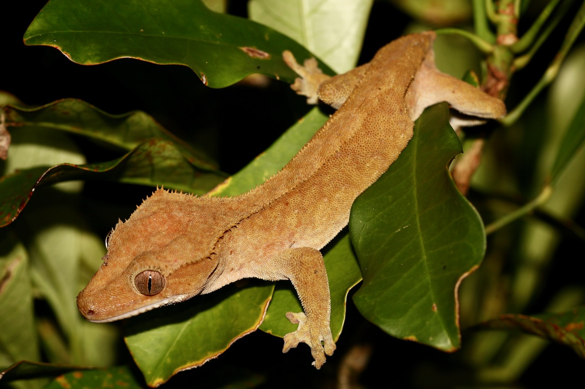

Crested Gecko
The crested gecko is a species of gecko native to southern New Caledonia.

Crested geckos typically range from 6–10 inches (15–25 cm) in length, including 4–6 inches (10–15 cm) of tail length.